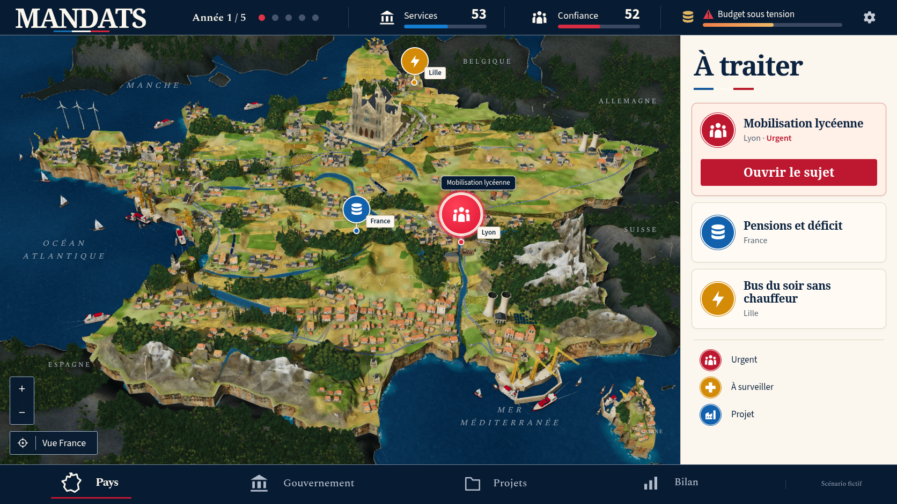
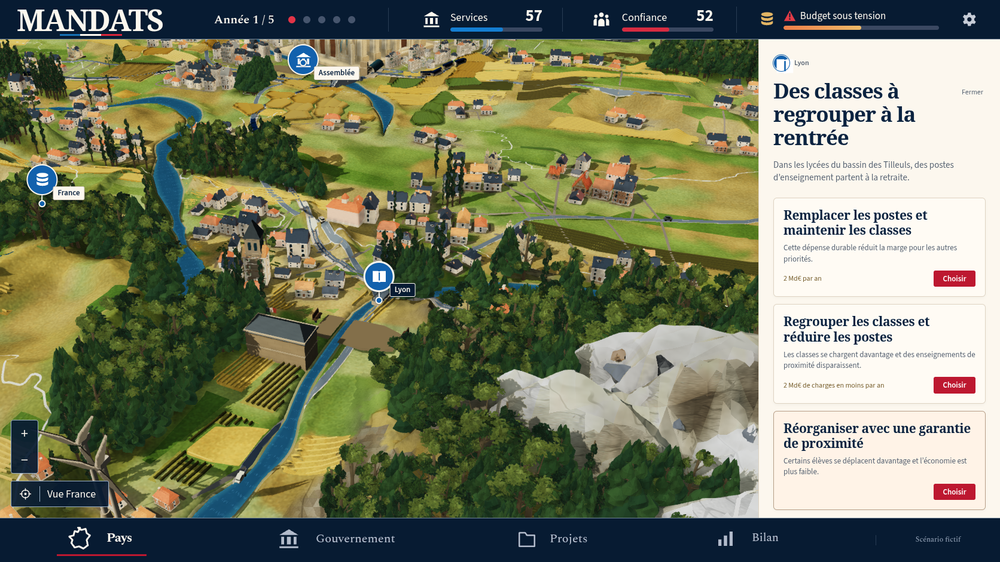
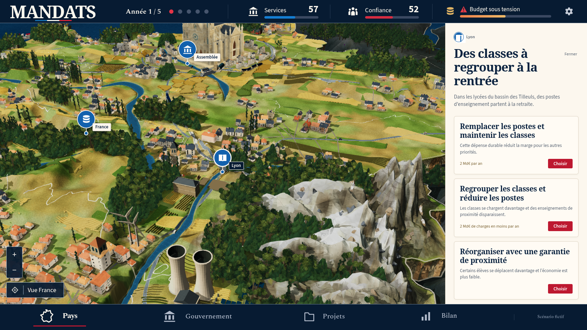
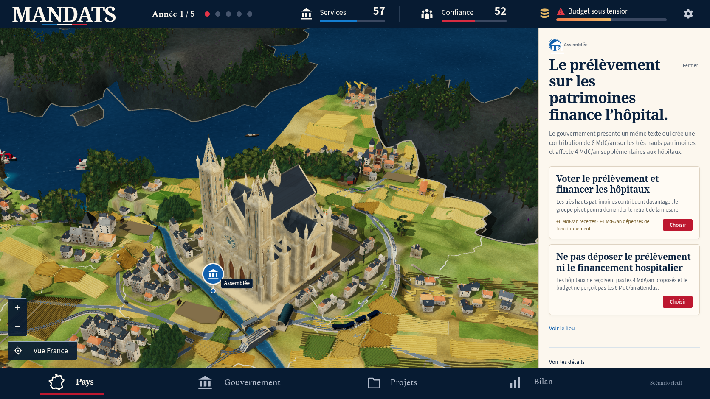
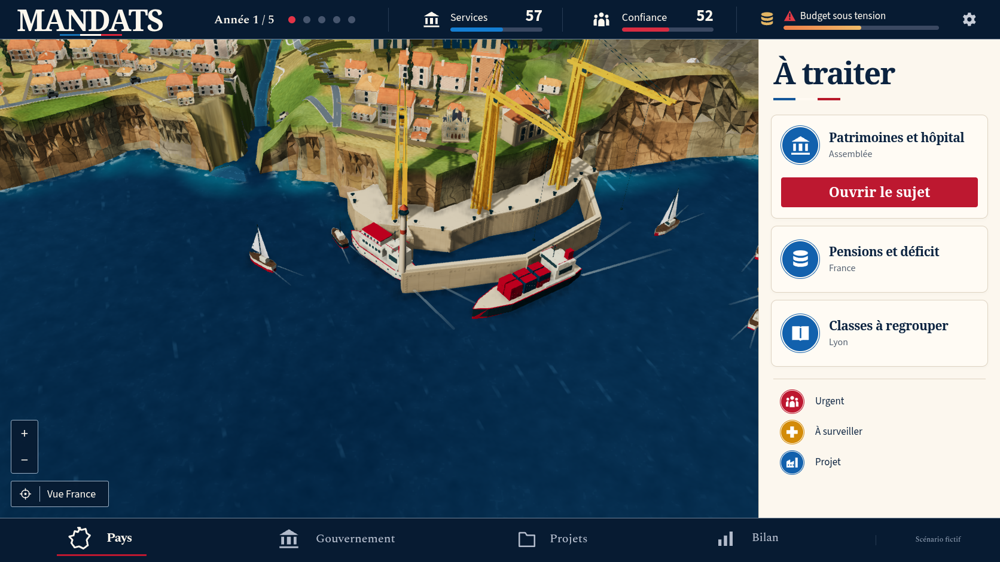
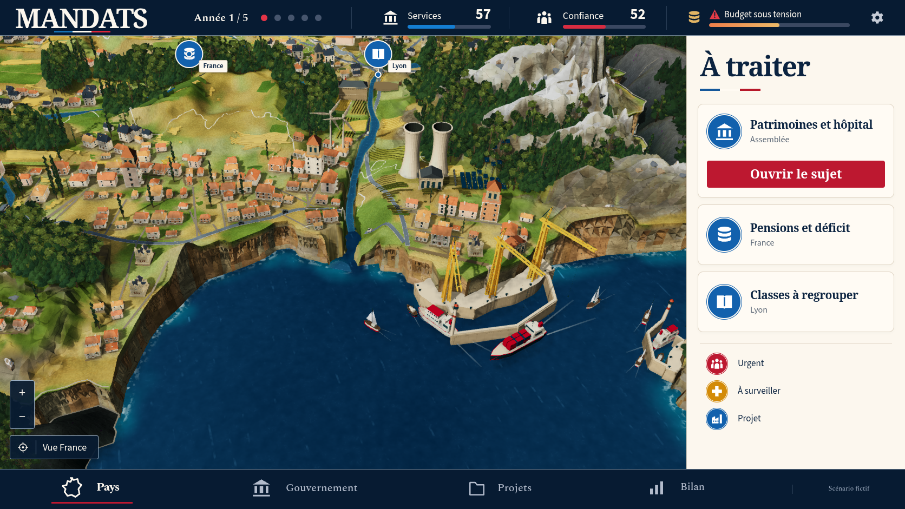
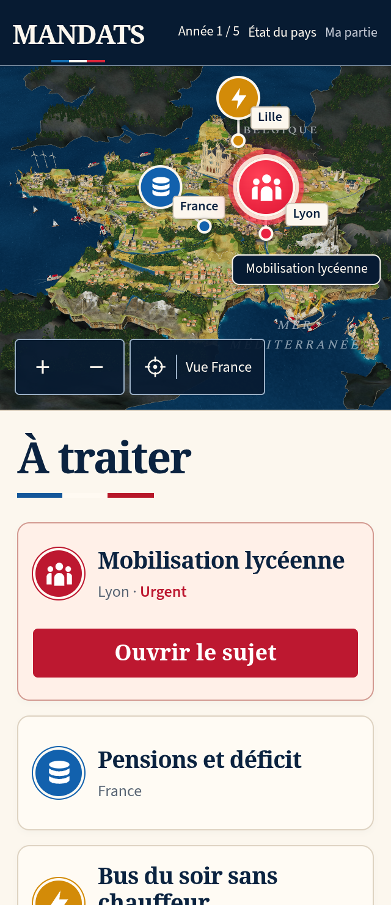
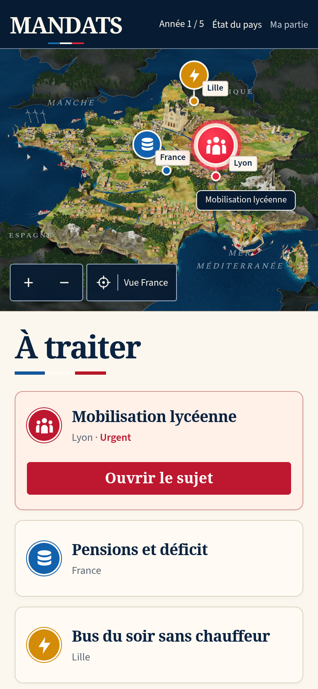
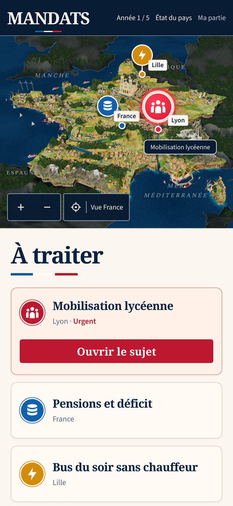

MANDATS : comparaison 54
La fidélité reste en cours. Les contrôles techniques passent localement ; le diorama reste en dessous de la référence. La PR 194 reste en brouillon et la modélisation continue.
Captures réelles du 13 octobre 2026 sur le build complet vérifié le 13 octobre. La décision scolaire produit les chiffres et la mobilisation affichés ; les valeurs de la maquette ne sont pas injectées.


Référence confirmée.Jeu réel après regroupement scolaire.
| Partie | Changement | Écart restant |
|---|
| Maisons | Murs réellement percés, vitrages en retrait, encadrements arrière tournés vers l'extérieur. Fenêtres à chaque étage sur les côtés et l'arrière ; bandeaux placés entre les rangées. Les 72 limites détaillées/distantes restent exactes et la maison CC0 est réintégrée. | Silhouettes répétitives et pierre encore trop uniforme face à la richesse photographique de la référence. |
| Boisements voisins | Les 4 883 arbres gardent leurs géométries, couleurs et poses, regroupées dans cinq buffers statiques indépendants. La transformation du modèle source est conservée ; les matrices reconstituées n'ont aucun écart mesuré. | Le terrain et les matières restent moins naturels que la référence. Le candidat grossier a été écarté. |
| Rendu | L'assembleur préserve les instances fines et compte réellement les arbres de chaque groupe. Le relevé compare positions, normales, UV, couleurs, indices et matériaux aux sources conservées. | Une première image locale plus rapide ne constitue pas une réussite de CI distante, une mesure de FPS matériel ou une conformité artistique. |

Bâtiments, boisements et matières.
Relief de la passe 53 conservé ; fidélité toujours en cours.
Cathédrale ajourée conservée, nouvelles façades alentour.
Falaises et rivière, cadrage obtenu au pointeur.
Vue du port élargie par les commandes du jeu.
Formats mobiles réels

320 × 740, DPR2.
390 × 844, DPR2.
WPE WebKit 390 × 844, DPR2, après Babylon et fin du rendu.La capture scolaire originale WebKit montre la préparation. Elle valide le parcours fonctionnel. La vue native ci-dessus est prise séparément après affichage complet de Babylon.
Vérifications et limites
Build complet : 1 082 tests réussis, trois vérifications TypeScript, Vite, pré-rendu et 152 ressources hors connexion. Suites originales rework : 23 réussites et neuf omissions prévues ; social : 13 réussites et trois omissions prévues. Aucun échec ni résultat instable ; tests, délais, reprises et workers inchangés. Le parcours original haute densité fait partie de la suite complète.
Quatorze captures natives de production, avec empreintes des bundles réellement servis identiques au build immuable et aucune erreur JavaScript, console, HTTP ou requête. Le relevé trouve 21 monuments sans chevauchement de canopée, 2 540 pieds d’arbres et 90 bases de rochers soutenus. Les 150 points des 50 faces inférieures de la cathédrale sont soutenus ; ses pieds et les deux grandes faces de son socle ne recouvrent pas l’eau. Ces observations ne certifient pas toutes les collisions ou tous les états futurs.
L'architecture ordinaire est régénérée avec ses cartes PBR. Deux exports de niveaux de détail, puis deux compositions avec la maison CC0 conservée, reproduisent les GLB et JSON ; cela ne constitue pas deux cuissons complètes indépendantes des textures. La végétation, la cathédrale et l'environnement restent identiques au parent 53. Les petits modèles de contexte expérimentaux ont été écartés et leurs fichiers restaurés.
L’hôpital est financé au tour 1 et livré au tour 3 par de vraies décisions. Son emplacement était déjà libre ; cela ne démontre pas le masquage puis la restauration d’arbres chevauchants.
La CI du parent 53 échoue au démarrage WebKit haute densité : 22 parcours rework réussis, neuf omissions et un échec au délai original de 15 secondes. La suite sociale suivante n'a pas été exécutée ; les cinq autres workflows réussissent. La trace réelle situe la géométrie à 11 612 ms, les shaders à 12 878 ms, puis une première image de 5 327 ms. Le nouveau test haute densité passe localement, avec son délai inchangé ; la CI de cette nouvelle passe reste à suivre.
Manifeste · Captures natives · Build · Appuis de Paris · Appuis des arbres et rochers · Monuments et shader réel · CI du parent · Relevé ciblé des vitrages · Kit actif